This was my second American Sports Car project.
A 1986 third generation Chevrolet Camaro Sport Coupe, with a 5-Litre Small Block Chevy V8 (a 305ci mouse motor).
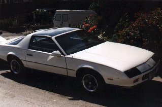 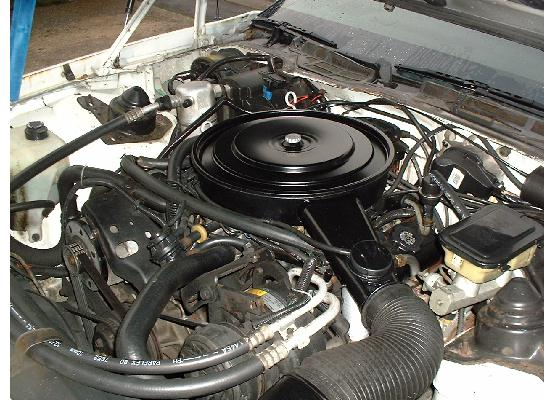
It was bought exactly 6 weeks after the sale of the first project car.
This was a 1977 Trans Am. The Camaro was bought from Doncaster in the UK on the 7th of May 1994.
Over the next 15 years (!), the car was turned into an air suspensioned lowrider with custom wheels and a custom flamed airbrushed paint scheme.
The car now (2020) sits in a private museum in Burnham-on-Sea in Somerset. Being well looked after.
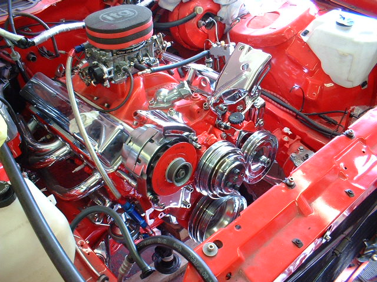
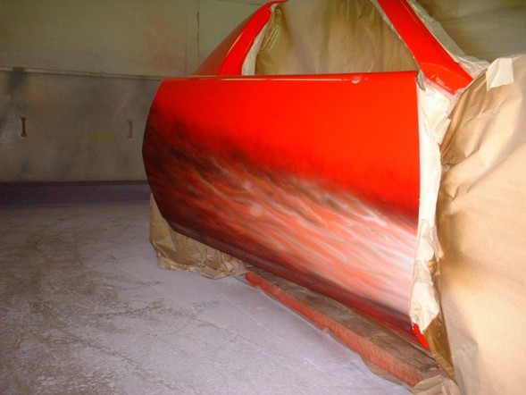
Everything that could be chromed was!
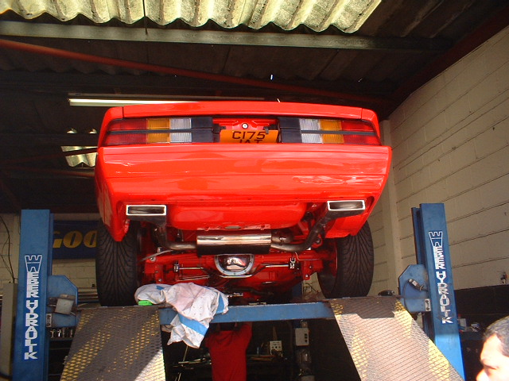
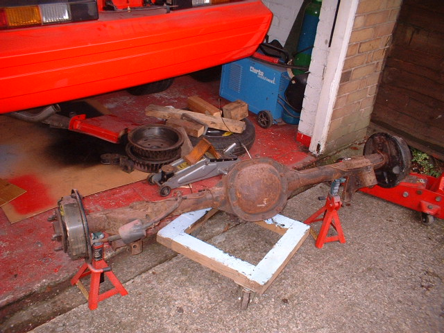 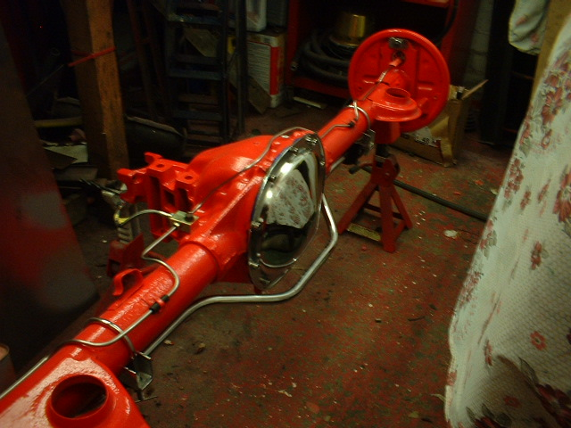
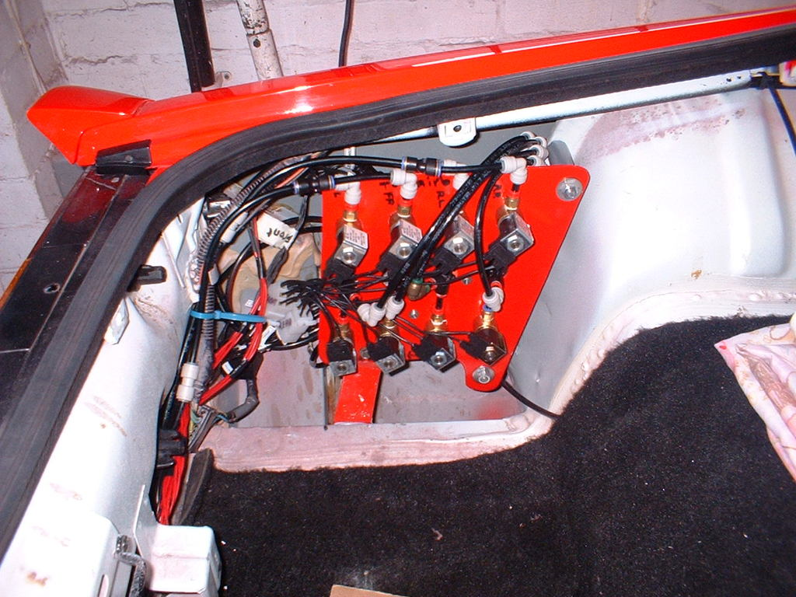 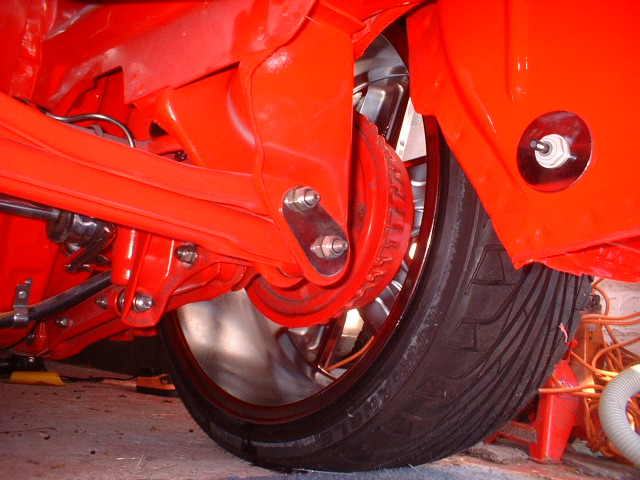
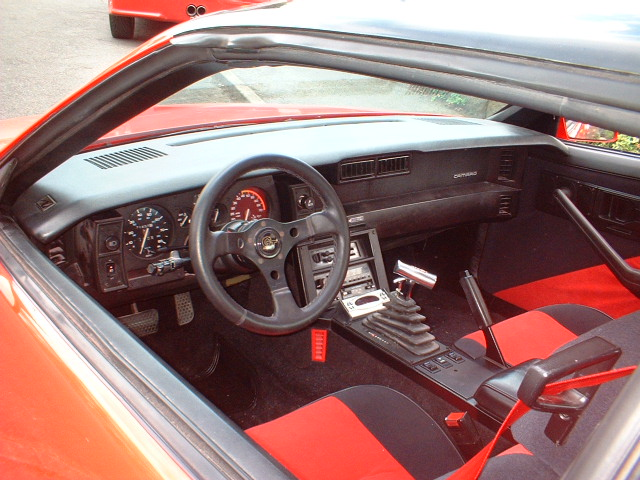 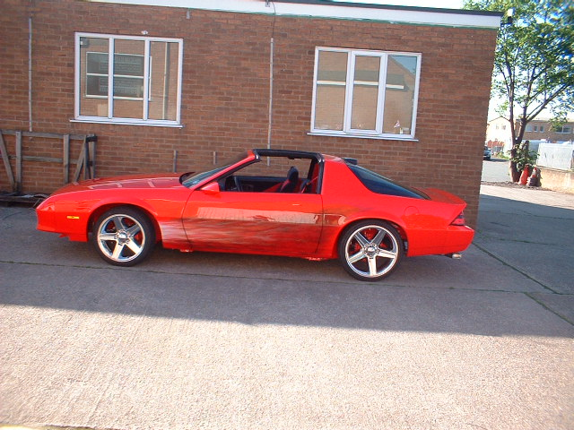
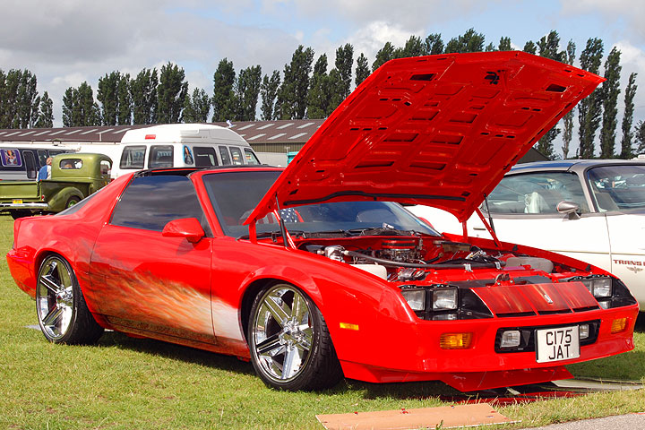